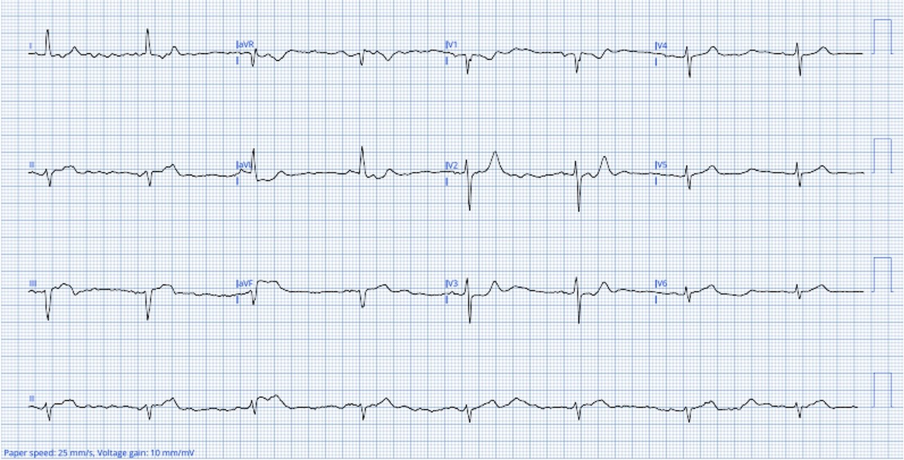
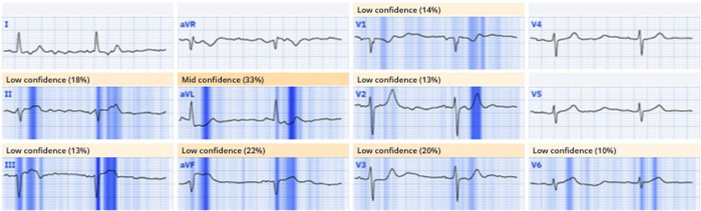
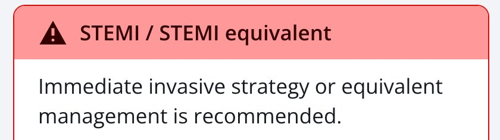
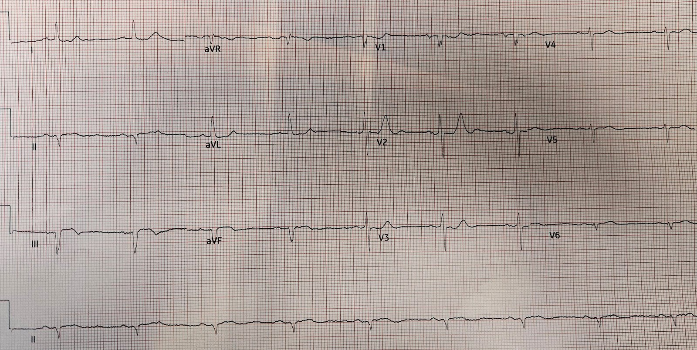
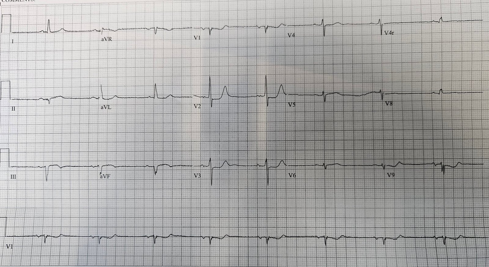
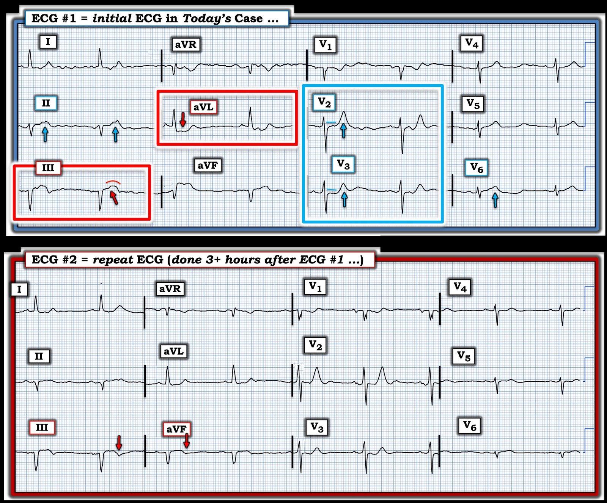

19/03/2025 — Có thể nào bệnh nhân đau ngực cấp với điện tâm đồ này không cần can thiệp cấp cứu?
Bản dịch tiếng Việt của bài "Is it possible that this patient with acute chest pain and this ECG does not need emergent intervention?" – Dr. Smith’s ECG Blog. Giữ nguyên toàn bộ 7 hình ảnh của bản gốc.
Ca bệnh do Andrew Grimes gửi,
nhân viên cấp cứu ngoài viện chăm sóc nâng cao (Advanced Care paramedic), có bổ sung của Jesse McLaren và Smith
Một
bệnh nhân nam 84 tuổi có tiền sử tim mạch đáng kể (CABG, nhiều stent)
thức dậy lúc 0500 giờ với cảm giác đè ép ở ngực, vã mồ hôi và choáng váng.
Ông đến khoa cấp cứu (ED) của một bệnh viện tuyến huyện vào khoảng 0630 giờ. Vì ông đang hồi phục
sau một đợt bệnh giống cúm (Influenza-like illness, ILI) gần đây và trả lời "có" với nhiều câu hỏi sàng lọc ILI
lúc phân loại, cảm giác thắt ngực và vã mồ hôi của ông
ban đầu được quy cho bệnh này. Dù vậy, một điện tâm đồ vẫn được ghi lúc 0649 giờ:


(Số hóa bằng PM Cardio)
McLaren: Bệnh nhân có xác suất tiền nghiệm
cao dựa trên tuổi, yếu tố nguy cơ và triệu chứng. Bệnh giống cúm cũng có thể
khởi phát nứt vỡ mảng xơ vữa. Dù có nhiễu đường nền, vẫn thấy nhịp chậm
xoang, ST chênh lên dạng lồi ở III, ST chênh xuống soi gương ở aVL và
có thể có ST chênh xuống ở các chuyển đạo trước – gợi ý OMI dưới-sau.
Đây là kết quả đọc của Queen
of Hearts, đặc biệt lưu ý tới III và aVL:




Bệnh nhân này quả thực cần can thiệp cấp cứu. Nhưng than ôi, cũng như rất nhiều bệnh nhân khác, các dấu hiệu trên điện tâm đồ đã không được nhận ra và ông đã không được can thiệp.
Tiêu chuẩn STEMI chỉ có độ nhạy 43% đối với OMI. Nhiều động mạch trong NSTEMI-OMI sẽ tự mở thông vào lúc chụp mạch vành ngày hôm sau, khi tổn thương đã xảy ra. Nhưng ở 34% trường hợp, động mạch vẫn tắc khi chụp mạch vành ngày hôm sau. Và nhóm này có tử vong gần gấp đôi so với NSTEMI có động mạch thông, dù trẻ hơn và khỏe mạnh hơn lúc ban đầu. Điều này có nghĩa là, chỉ riêng tại Hoa Kỳ, trong 500,000 ca NSTEMI, có 170,000 ca không nhận được sự chăm sóc mà họ đáng được hưởng. Họ rốt cuộc chịu tử vong cao và suy tim không đáng có.
Hung C-S, Chen Y-H, Huang C-C, và cs. Prevalence and outcome of patients with non-ST segment elevation myocardial infarction with occluded “culprit” artery – a systemic review and meta-analysis (Tỷ lệ và kết cục của bệnh nhân nhồi máu cơ tim không ST chênh lên có động mạch “thủ phạm” bị tắc – tổng quan hệ thống và phân tích gộp). Crit Care [Internet] 2018;22(1):34. Truy cập tại: https://link.springer.com/article/10.1186/s13054-018-1944-x
Các dấu hiệu sinh tồn nhìn chung bình thường. Ông
được điều trị bằng bình xịt định liều (MDI), nhưng khi không thấy cải thiện, các xét nghiệm
đánh giá tim được chỉ định. Troponin độ nhạy cao (hs-cTn) ban đầu âm tính (11 ng/L). Ông được xịt hai
lần nitroglycerin dưới lưỡi, không lần nào làm giảm
đau nhưng lại khiến ông tụt huyết áp thoáng qua (huyết áp tâm thu <90mmHg).
McLaren: không có gì bất thường khi troponin < 2
giờ sau khởi phát triệu chứng vẫn nằm trong giới hạn bình thường, điều này gây yên tâm
sai lầm khi có một điện tâm đồ cho thấy tắc động mạch vành cấp.
Smith: Điện tâm đồ này có giá trị chẩn đoán tắc. Đừng chờ troponin!!
Vài giờ sau, troponin lặp lại trả về >600 ng/L.
Smith: giờ thì hoàn toàn không còn nghi ngờ gì về chẩn đoán, kể cả khi bạn hoàn toàn không biết đọc điện tâm đồ. Bệnh nhân bị đau ngực cấp, dai dẳng, kháng trị và troponin tăng. Không cần thêm một điện tâm đồ nữa. Cứ đưa thẳng vào phòng thông tim! Đáng tiếc là hiện nay chỉ 6% bệnh nhân NSTEMI nguy cơ rất cao cần vào phòng thông tim được xử trí đúng.
Đã hội chẩn khoa Tim mạch
ở một trung tâm lớn hơn và một điện tâm đồ ghi lại được thực hiện lúc 1119 giờ:


Smith: trên điện tâm đồ có bằng chứng tái tưới máu: ST chênh lên (STE) ít hơn, sóng T đảo ngược nhiều hơn ở các chuyển đạo dưới và sóng T giảm kích thước ở V4-6. Nhưng bệnh nhân vẫn còn đau.
Bác sĩ tim mạch lo ngại nhồi máu cơ tim
thành sau và đề nghị ghi điện tâm đồ 15 chuyển đạo, được thực hiện lúc 1210 giờ:


Smith: không cần điện tâm đồ chuyển đạo phía sau! Các chuyển đạo trước tim bên phải V1-V3 cho bạn biết tất cả những gì cần biết. BẤT KỲ ST chênh xuống nào ở các chuyển đạo này đều là OMI cho tới khi chứng minh được điều ngược lại. Xem bài báo của chúng tôi tại đây. Khi bạn đã chẩn đoán OMI thành sau, các chuyển đạo phía sau có thể âm tính giả.
Chuyển đạo phía sau V9 rõ ràng đã bị đặt sai vị trí, vì về hình dạng nó phải tương đối soi gương (ngược chiều) với V2.
McLaren: Sóng
T đảo ngược ở thành dưới gợi ý hoặc tái tưới máu (nếu triệu chứng đã hết) hoặc
thiếu máu cục bộ kháng trị bán cấp – và theo mô tả trước đó về cơn đau
không đáp ứng với nitro thì nhiều khả năng là trường hợp sau. Dù không có ST chênh lên ở các chuyển đạo phía sau,
vẫn còn ST chênh xuống ở các chuyển đạo trước, và sóng R ở V2 lớn dần do
nhồi máu thành sau.
Ca bệnh tiếp diễn
Phác đồ NSTEMI được chỉ định, và bệnh nhân được dùng ASA, enoxaparin và
ticagrelor. Lệnh chuyển viện khẩn đến trung tâm tim mạch được đưa ra. Quá trình chuyển viện
không có biến cố và các điện tâm đồ liên tiếp không cho thấy diễn tiến thêm đáng kể. Bệnh nhân
vẫn còn cảm giác “đè ép” mức 4/10 nhưng khẳng định mình khá dễ chịu.
Khi đến đơn vị chăm sóc mạch vành, bệnh nhân sớm được làm PCI. Ông bị
tắc 100% RCA và đã được đặt stent. LCx của ông thông nhưng nhỏ, và chỉ tưới máu
một phần nhỏ thành sau. Bác sĩ tim mạch mô tả ông là một ca
“khó”.
Tôi
thấy ca này thú vị với nhiều điểm cần học, bao gồm:
1.
Hướng chẩn đoán sai ban đầu
sang ILI
2.
Không nhận ra các dấu hiệu điện tâm đồ của
tắc mạch
3. Queen of Hearts chẩn đoán OMI không chút khó khăn
4.
Điều trị như
“NSTEMI” dù RCA tắc 100% và vẫn còn đau.
5. Chuyển đạo phía sau có thể âm tính giả
6. Chuyển đạo phía sau có thể bị đặt sai
7.
Về điện tâm đồ, ca
này cho thấy ST chênh lên ở thành dưới kèm chênh xuống soi gương ở aVL nhưng
chưa hẳn đạt tiêu chuẩn STEMI, ST chênh xuống tối đa ở V2-V3 (đặc hiệu >97%
cho nhồi máu cơ tim thành sau), và sóng R tăng tiến ngày càng sớm ở các chuyển đạo trước, cho thấy
nhồi máu thành sau.
Beware confusing the diagnosis of posterior STEMI by using posterior leads… (Coi chừng làm rối chẩn đoán STEMI thành sau khi dùng chuyển đạo phía sau…)
7 steps to missing posterior Occlusion MI, and how to avoid them (7 bước dẫn tới bỏ sót nhồi máu cơ tim do tắc thành sau, và cách tránh chúng)
Interventionalist at the Receiving Hospital: “No STEMI, no cath. I do not accept the transfer.” (Bác sĩ can thiệp ở bệnh viện tiếp nhận: “Không có STEMI thì không thông tim. Tôi không nhận chuyển viện.”)

===================================
BÌNH LUẬN CỦA TÔI, bởi KEN GRAUER, MD (19/3/2025):
===================================
Có lẽ hình ảnh nhồi máu hay bị bỏ sót nhất — là OMI thành sau. Lý do rất đơn giản: Do vị trí tương đối của hoạt động điện khi thành sau thất trái bị nhồi máu cấp — không có ST chênh lên trên điện tâm đồ 12 chuyển đạo chuẩn.
- Không nhận ra OMI thành sau sẽ không thành vấn đề NẾU, như vẫn thường xảy ra — có bằng chứng rõ ràng của nhồi máu cơ tim thành dưới đi kèm (điều này hay gặp vì cả RCA lẫn LCx thường cùng cấp máu cho cả thành sau và thành dưới thất trái). Nhưng khi nhồi máu chỉ khu trú ở thành sau — hoặc khi các dấu hiệu điện tâm đồ của tổn thương thành dưới kín đáo (như trong ca hôm nay) — người thầy thuốc “không để ý” sẽ dễ dàng bỏ sót OMI thành sau.
- Nhiều thầy thuốc xử lý việc thiếu ST chênh lên trên điện tâm đồ chuẩn bằng cách chuyển sang dùng chuyển đạo phía sau. Nhưng như chúng tôi đã nhiều lần chỉ ra trên Dr. Smith’s ECG Blog — việc phải đi qua lớp cơ lưng dày làm giảm đáng kể biên độ các sóng điện tâm đồ, khiến độ nhạy của chuyển đạo phía sau trong phát hiện OMI thành sau là không đủ.
- Để nhận ra OMI thành sau, không cần đến chuyển đạo phía sau. Ở bệnh nhân đau ngực — dấu hiệu ST chênh xuống tối đa ở chuyển đạo V2 và/hoặc V3 và/hoặc V4 cho thấy OMI thành sau — đặc biệt khi hình dạng của đoạn ST dẹt/chênh xuống đó phù hợp với nghiệm pháp soi gương (“Mirror” Test) dương tính (Xem Bình luận của tôi trong bài ngày 21 tháng Chín năm 2022).
CA BỆNH hôm nay là một minh họa:
- Vì bệnh nhân hôm nay đến với triệu chứng “ILI” (tức là của một bệnh giống cúm —Influenza-Like Illness) — cảm giác thắt ngực và vã mồ hôi của ông đã bị quy cho một bệnh do virus. Nhưng mọi bệnh nhân đến khoa cấp cứu vì khó chịu ở ngực đều được ghi điện tâm đồ — và điện tâm đồ ban đầu trong ca hôm nay (mà tôi đã dựng lại và đánh dấu trong Hình 1) — có giá trị chẩn đoán OMI thành sau cấp.
- Bệnh nhân hôm nay 84 tuổi — ông có bệnh mạch vành nặng đã biết (đã CABG; nhiều stent) — và ông bị đánh thức khỏi giấc ngủ vì cảm giác đè ép ngực, vã mồ hôi và choáng váng. Với bệnh sử này — mọi bất thường điện tâm đồ đều phải được coi là cấp tính cho tới khi chứng minh được điều ngược lại.
- Với bệnh sử này — “mắt” tôi lập tức bị hút về 2 chuyển đạo trong các hình chữ nhật ĐỎ. Sóng ST-T ở chuyển đạo III “đầy đặn”, dạng vòm, chênh lên rất nhẹ, và thoáng có sóng T đảo ngược ở phần cuối. Ủng hộ cho việc dấu hiệu ở chuyển đạo III này đúng là chỉ điểm OMI thành dưới cấp — là ST chênh xuống soi gương ở chuyển đạo aVL.
- 2 chuyển đạo trong các hình chữ nhật XANH xác nhận có OMI thành sau đi kèm — qua sự hiện diện của ST thẳng đuỗn ở chuyển đạo V2 — và ST chênh xuống dạng dẹt ở chuyển đạo V3 (trong khi bình thường — ở 2 chuyển đạo này phải có ST chênh lên nhẹ, dốc lên từ từ). Đặc biệt bất thường là các sóng T nhọn ở 2 chuyển đạo trước tim này, với kích thước sóng T ở chuyển đạo V2 rõ ràng không tương xứng với biên độ QRS ở V2.
- Các chuyển đạo khác (tức là chuyển đạo II và V6) cũng có sóng T trông như tối cấp — nhưng dù có nhiễu — chính sóng ST-T ở 4 chuyển đạo trong các hình chữ nhật màu mới là thứ phải chỉ điểm OMI dưới-sau cấp cho tới khi chứng minh được điều ngược lại.


Những bài học khác cần rút ra:
- Dù bệnh nhân nguy cơ cao đến với cảm giác đè ép ngực nặng mới xuất hiện — điện tâm đồ ban đầu hôm nay đã không được ghi lại trong hơn 3 giờ. Đặc biệt khi bản ghi ban đầu có những dấu hiệu điện tâm đồ đáng lo ngại — điện tâm đồ ban đầu cần được ghi lại trong vòng không quá 15-30 phút. Cần ghi thêm các điện tâm đồ liên tiếp thường xuyên cho tới khi bạn có thể tự tin về chẩn đoán.
- Như Dr. McLaren đã nêu — troponin ban đầu âm tính không loại trừ một biến cố cấp, vì có thể cần một thời gian trước khi giá trị troponin tăng lên.
- Bệnh nhân hôm nay bị tụt huyết áp sau khi dùng nitroglycerin. Đặc biệt khi đang nghĩ tới nhồi máu thành dưới cấp — tụt huyết áp do NTG phải là lời nhắc ghi chuyển đạo bên phải để loại trừ tổn thương thất phải đáng kể (Xem Bình luận của tôi trong bài ngày 19 tháng Bảy năm 2020).
- So sánh các điện tâm đồ liên tiếp tốt nhất là đặt 2 bản ghi cần xem cạnh nhau. Việc này được thực hiện trong Hình 1 — và so sánh từng chuyển đạo một cho thấy một số sóng T tối cấp giờ không còn nổi bật như trước ở điện tâm đồ ghi lại (tức là các đoạn ST đã “xẹp” bớt phần nào ở chuyển đạo II,III,aVF) — ST chênh xuống ở chuyển đạo aVL ít hơn — và có sự tiến triển của sóng T tái tưới máu (sóng T đảo ngược giờ đã thấy rõ ở chuyển đạo III và aVF — và sóng T ở chuyển đạo V2 cao hơn). Nếu triệu chứng của bệnh nhân giảm đi cùng lúc với sự xuất hiện các sóng T tái tưới máu này trên điện tâm đồ #2 — đây sẽ là thêm bằng chứng của OMI dưới-sau cấp cần thông tim kịp thời.
- ĐIỀU CỐT LÕI: Nếu ở một bệnh nhân đau ngực mới xuất hiện — thấy “bức tranh” ST-T dẹt-chênh xuống ở 2 chuyển đạo trong hình chữ nhật XANH ở Hình 1 — Hãy nghĩ tới OMI thành sau cấp cho tới khi chứng minh được điều ngược lại. Không cần chuyển đạo phía sau để đi đến kết luận này.